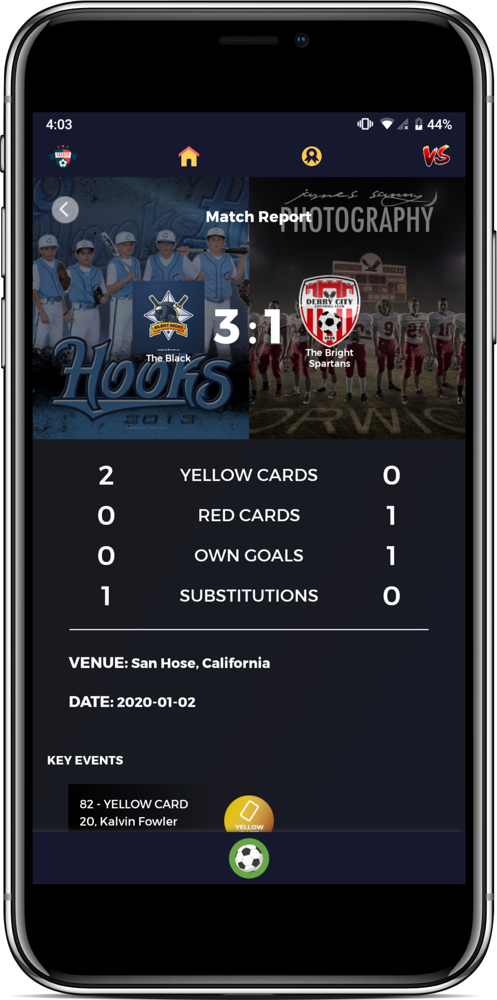
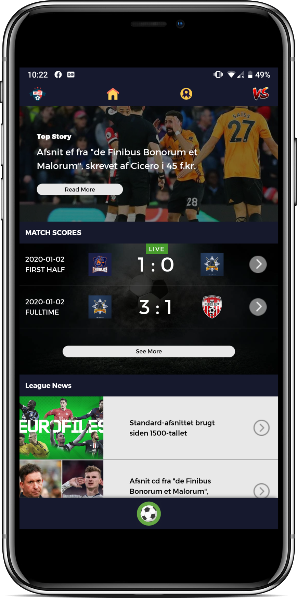
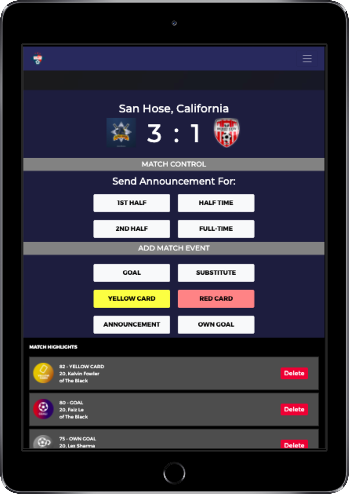

Soccer League
MySoccerLeague is a full-fledged online Soccer League Management App that lets the fans feel live-like experiences from the comfort of their home.
Features:
- It’s a Progressive Web App, means as a fan, you can get realtime notifications during important events of the match (eg: GOAL, RED CARD, YELLOW CARD, OFFSIDE, etc.)
- As a Moderator(organizer), you get to add as many matches as you want, send out the notifications to the fans. Yes, you can even send out commentary snippets.



So, if you are looking for an affordable app to make an online presence for your Soccer League, MySoccerLeague is what you will ever need.
Demo:
- User Faced: https://league-demo.ml
- Admin Faced: https://league-demo.ml/admin